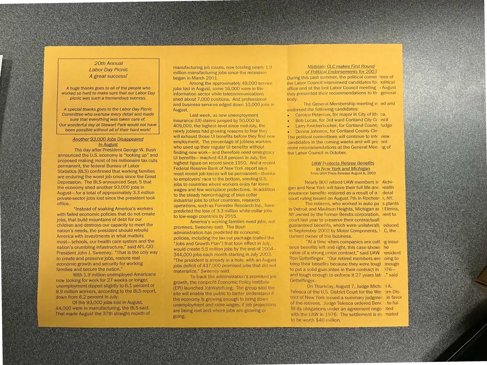
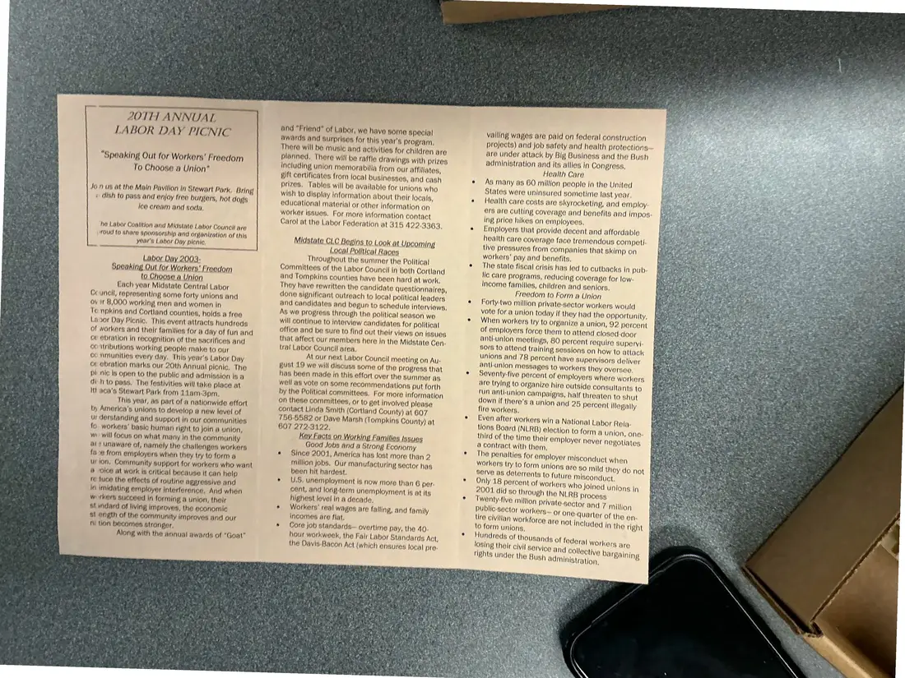

Newsletter, 1 page, plus 1 additional copy
Union City News inside spread: 20th Annual Labor Day Picnic [2003]
[Summer 2003]Date inferred
The inside pages of a 2003 issue promoting the 20th Annual Labor Day Picnic (“Speaking Out for Workers' Freedom to Choose a Union”), with news on manufacturing job losses and the council's first round of 2003 political endorsements. Two copies on different colored paper were photographed; no mailing panel survives.
Download or cite this itemPages


(open zoom view)Read the page text (machine-read, mostly readable)
This text was generated automatically from the photograph and has not been corrected. The image is the authoritative record.
20th Annual Labor Day Picnic A great success! A huge thanks goes to all of the people who worked so hard to make sure that our Labor Day picnic was such a tremendous success. A special thanks goes to the Labor Day Picnic Committee who oversaw every detail and made sure that everything was taken care of. | Our wonderful day at Stewart Park would not have been possible without all of their hard work! er President George W. Bush 1e U.S. economy is “looking up” and <ing most of his millionaire tax cuts \t, the federal Bureau of Labor (BLS) confirmed that working families ing the worst job crisis since Depression. The BLS announced Sept. 5 that the economy shed another 93,000 jobs in August— for a total of approximately 3.3 million ctor jobs lost since the president took “Instead of soaking America’s workers with failed economic policies that do not create jobs, that build mountains of debt for our children and destroys our capacity to meet the nation’s needs, the president should rebuild America with investments in what matters schools, our health care system and the n's crumbli ” said AFL-CIO esident John J. and pre th 1.9 million unemployed Americans / weeks or longer y to 6.1 percent or S report According to the percent in July. manufacturing job losses, now totaling nearly 1.9 million manufacturing jobs since the recession began in March 2001. Among the approximately 49,000 service jobs lost in August, some 16,000 were in the information sector while telecommunications shed about 7,000 positions. And professional and business services edged down 10,000 jobs in August. Last week, as new unemployment insurance (UI) claims jumped by 50,000 to 409,000, the highest level since mid-July, the newly jobless had growing reasons to fear they will exhaust those UI benefits before they find new employment. The percentage of jobless workers who used up their regular Ul benefits without finding new work— and therefore need emergency Ul benefits— reached 43.8 percent in July, the highest figure on record since 1950. And a recent Federal Reserve Bank of New York report sa\ most recent job losses will be permanent to employers’ race to the bottom, sending | jobs to countries where workers enjoy far wages and few workplace p sctions. In addition to the steady hemorrhaging of blue industrial jobs to other countries, research operations, such as Forrester Research Inc., have predicted the loss of 3.3 million white-collar jobs to low-wage countrie: 15 America’s working families need jobs, not weeney said. The Bush redicted its economic "Jobs and an”) create 5.5 million jok ich month sta! ) that took ing in July 2003 ady in a hole, with an August O00 promised jobs that did not ney sald. To track the admin tion's promised job h, the nonprofit Economic Policy Ins I 11 ,en i tina The group said the Midstatc CLC makes First Round of Political Endorsements for 2003 During this past summer, the political comm tees « the Labor Council interviewed candidates for solitical office and at the last Labor Council meeting) August they presented their recommendations to th general body. The General Membership meeting vi endorsed the following candidates: * Carolyn Peterson, for mayor in City of Ith e Bob Lucas, for 3rd ward Cortland City Cc e Larry Knickerbocker, for Cortland County Donna Johnson, for Cortland County Cle: The political committees will continue to inte candidates in the coming weeks and will pre commendations at the General Mee yuNcil in October. Protects Retiree Benefits ew York and Michigan arly 800 retired UAW members ir fork will have their full life anc s restored as a result of a 2d on August 7th in Roches! I es, who worked in auto pa s plants in Detroit and Madison Heights, Michigan ar | Elmira, NY owned by the former Bendix corporation, vent to court last year to preserve their contractuall insurance ber court rul > of a strong said UAW resident Ron Gettelfi oing to Pan oe Ma A Lae 4 antee in their cor ) enough to enforce it Gettelfinger rena Aviciict 7 nd =. ursday, August /, Jt Telesca of the of New York i: of the re al fill its ob Nee EN ~
Additional copies
The same document was photographed more than once. These copies may carry different handwriting, stamps, or paper.


(open zoom view)Read the page text (machine-read, contains errors)
This text was generated automatically from the photograph and has not been corrected. The image is the authoritative record.
20TH ANNUAL
LABOR DAY PICNIC
“Speaking Out for Workors’ Freedom
To Choose 9 Union®
467118 at the Main Pavilion in Stewart Pork, Brings
+ dish to paas and enjoy free burgers, hot dogs
feo cream and soda,
he Labor Coalition and Midatate | abor Counell are
roud (0 Bare sponsorship and orfanization of this
year's Labor Day plenie.
sh nemnaeniisiocaeaecon: : seamlibpsioncimioeae ccs as
Labor Day 2003-
Speaking Out for Workers’ Freedom
{0 Choose @ Union
Each year Midatate Central Labor
Cc unell, representing some forty unions and
OV 1 8,000 working mon and women in
To npkine and Cortland counties, holds a free
Lasor Day Plenic. This event attracts hundreds
Of workers and thelr families for a day of fun and
eC ebration in recognition of the sacrifices and
ce itributions working people make to our
ce nmunities every day, This year's Labor Day
ce ebration marks our 20th Annual plonic. The
pl nic Is open to the publie and admission is a
di h to pass, The festivities will take place at
Itt aca’s Stewart Park from 1am Spm.
This year, a8 part of a nationwide effort
ty America's unions to develop a new level of
ur derstanding and support in our communities
fo workers’ basic human right to join a union,
wi will focus of what many in the community
at yUnaware of, namely the challenges workers
fa:e from employers when they try to form a
ur ion, Community support for workers who want
8 -clce at work is critical because It can help
re luce the effects of routine argreasive and
in imidating employer interference, And when
workers succeed in forming a union, their
St ifidard of living improves, the economic
St ength of the community improves and our
fe on becomes atronger,
Along with the annual awards of "Goat"
and “Friend” of Labor, we have some special
awards and surprises for this year's program,
There will be music and activities for children are
planned, There will be raffle drawings with prizes
including union memorabilia from our affiliates,
gift certificates from focal businesses, and cash
prizes, Tables will be available for uniona who
Wish to display information about their locals,
educational material or other information on
worker igaues. For more information contact
Carol at the Labor { ederation at 315 422.3363,
Midstate CLC Begins to Look at Upcoming
Local Polltical Races
Throughout the summer the Political
Committees of the Labor Gouneill in both Cortland
and Tompking counties have been hard at work,
They have rewritten the candidate questionnaires,
done significant outreach to local political leaders
and candidates and begun to schedule interviews
AS We progrese through the political season wo
will continue to interview candidates for political
office and be sure to find out their Views on issues
that affect our members here in the Midstate Cen-
tral Labor Council area,
A( our next Labor Council meeting on Au-
Bat 19 we will discuss some of the progress that
has been made in this effort over the summer as
well as vole on some recommendations put forth
by the Political committees, Far more information
on these committees, or to get Involved please
contact Linda Smith (Cortland County) a1 607
756-5582 or Dave Marah (Tompkina County) at
607 272-3122,
Key Facts on Working Families tssues
Good Jobs and a Strong Economy
Since 2001, America has lost more than 2
million jobs. Our Manufacturing sector hag
been hit hardest.
U.S, uneiployment is now More than G per-
cent, and long-term unemployment is at its
highest level in a decade,
Workers’ real wages are falling, and family
inicomes are flat,
Core job standards— overtime pay, the 40
hour workweek, the Fair t abor Standards Aet,
the Davis-Bacon Act (which ensures local pre-
valling wages are paid on federal construction
projects) and job safely and health protections
are under attack by Big Business and the Bush
administration and its allies In Congress.
Health Care
As many as 60 million people In the Unite
States were uninsured sometime last year,
Health care coats are skyrocketing, and employ
ers are culling coverage and benefits and Im pos
ing price hikes an employees,
Employera that provide decent and affordable
health care coverage face tremendous competi
(ive pressures from companies that skimp on
workera’ pay and benefits,
The state fiscal eriaia has fed to cutbacka In pub
Ile care programs, reducing coverage for law
income famities, children and seniors,
Freedom to Form a Union
Forly-two million private-sector workera would
vote for a tinion today if they had the opportunity.
When workers try to organize a union, 92 percent
of amployers force tham to attend closed-door
anti-unton meetings, 80 percent require gupervi
S018 to attend training sessions on how to attack
unions and 78 percent have supervisors deliver
antl-union Mesasapyes to workers they oversee.
Seventy-five percent of employers where workers
are trying to organize hire outside consultants to
Tun antlunion campaigns, half threaten to shut
down If there's a union and 25 percent Nepally
fire workers,
Even after workers win ® National Labor Rela-
llons Board (NLRB) election to form a unlon, one-
third of the time thelr employer never hegotiates
A contract with (ham,
The penalties for employer ml
workers try to form UNIONS are se mild they do not
Serve ps deterrents to future misconduct,
Only 18 percent Of Workers whe Joined unions in
2001 did 50 through the NLRB process
Twenty-five milion private-sector and 7 million
public-sector workera— OF one-quarter of the en-
lire eivillan workfore
© are not Included in the ri
lo form unions, ae
Hundreds of thous
losing thelr elvit 80
fights under the
Sconduet when
ands of federa| Worker.
rice and Collective
Bush administration.
8 are
ba gainingSee something wrong, or recognize a person or event? Send a correction. If you hold rights in this item or think it should not be public, write to the same address.